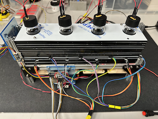
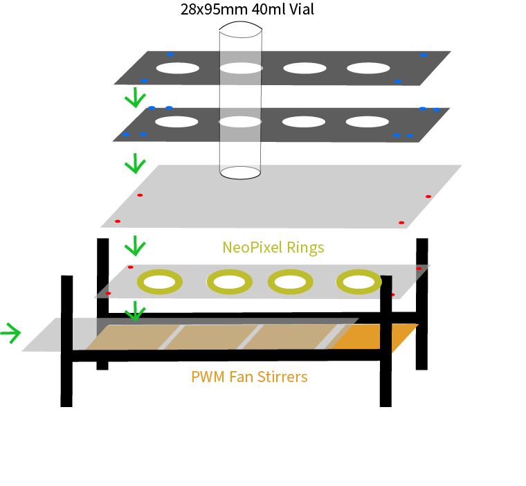

Overview
This note describes the design and construction of a RaspberryPi based 4-bioreactor system that has external illumination, external temperature recording, and magnetic stirring. The system monitors internal temperature and pressure using the BME280 series sensor and monitors turbidity via Infrared absorbance (\(180^{\circ}\) ) and scattering (\(135^{\circ}\)). This system is based on the sealed long-term ecosystems designed by the Kuehn Lab [1].

Introduction
This note will describe the build process in a series of steps which describe the design and construction of the following:
- Variable speed, pulse wave modulated (PWM) magnetic stirring
- Programmable Illumination using NeoPixel 8 LED rings
- Turbidity measurements with reference using infrared LED’s and photodiodes.
- Vial surface temperature using DS18B20 Temperature Sensors
- External Temperature using PCT2075 Temperature Sensor.
- Internal Temperature, Pressure and Humidity using BME280 sensors
- Construction, and Assembly of Final Device
Instructions for setting up your Raspberry Pi with the required libraries and the code to run this series of reactors can be found on Michele Cespa’s Github. This also includes a diagram of the wiring for all for the sensors. (Note this is run on Pi 3B+s, and there is a known issue with Pi5s not supporting the RPi.GPIO library). We have attempted to include all relevant information for recreating this build as inline links. Some of the products listed are from UK based suppliers, if you have trouble sourcing any of them where you are, reach out and I may be able to provide some advice on alternatives.
{kind=link}
Design and Construction
Magnetic Stirring
Magnetic stirring is done using PWM controlled PC fans as with magnetics attached. For this version, I have used Noctua NF-A6x25 Fans, which are 12V and 60mm square. The have anti-vibration pads and can be mounted directly to the 15mm construction rail we have used as a frame. The frame consists of 2x 270mm and 4x150mm beams (more details in Construction and Assembly). A pair of magnets is attached to the free face of each fan (the underside) with one “face up” next to one “face down” using 3M double stick foam tape. The fans include a Y-adapter which can be used to make a tree so that all fans can be powered and controlled with a single connector. The magnets spin a 10mm stir bar placed inside each vial.
Programmable Illumination
Illumination is provided from below using a Neopixel 8 LED ring, mounted above the fan. This allows for arbitrary RGB coloring. The NeoPixel library allows the specification of color in 3-element RGB format. The rings are connected in series, but fully addressable individually. Sample code for programming the rings is provided in the git repository in the build directory. A custom base which allows for the cables to be daisy chained as well as a holding plate for each ring were laser cut. The assembly is outlined below.
Turbidity Measurement Layer
Turbidity is measured using simple photodiode circuits to convert photons into a voltage that is read by one of the two analog to digital converters (ADCs) and read over the i2c protocol on the Raspberry Pi. We have employed a 4-channel 16 bit ADC and an 8-channel 8 bit ADC to record the 12 photodiode signals. 4 pass-thru absorbance signals at (\(180^{\circ}\) ) and 4 scattering signals at (\(135^{\circ}\)) and 4 IR LED output reference signals. This design was adapted from a similar design in the commerically available PioReactor. We have 4 of these that will be used for another part of the project. Each of the LEDs and photodiodes is held in the correct orientation and location by placing it in an appropriately shaped laser cut-out. The LEDs were provided a constant current that could be switched on and off using a FemtoBuck.
Vial Surface Temperature Layer
Above the Turbidity sensor layer, there are 4 DS18B20 one-wire temperature probes that monitor the temperature at the outside surface of the vial. Using the 1-wire protocol allows fro all of these to be wired together in parallel, which is greatly simplified by using these daisy chain wires1 from Mouser.
Internal Pressure and Temperature Sensors
The internal pressure sensors are mounted in the lids of the vials in a manner similar to the one described in [1]. First, 4 holes were laser cut into each lid to allow a 4-pin male-male header to pass through snugly. This was then sealed with hermetic sealing epoxy (Epo-tek H74). These reactors are designed for experiments much shorter than those described in [1], so less expensive epoxy could probably be used. Each BME280 sensor board was soldered with a 4-pin female header. On the outside, the same daisy chain wires were used to provide power to each sensor board in parallel, and an individual wires were attached to the pins for each SDA and SCL pin and connected to a 4-channel multiplexer.
External Temperature
Finally an external temperature sensor (PCT2075) was added in series with all fo the other i2c components to monitor the fluctuations in temperature in the room, due mostly to changes in the building-wide heating and cooling system. As this design does not incorporate onboard temperature control, the entire rector can be either placed in an incubator or in a temperature controlled room if desired. The next generation reactor will incorporate onboard temperature control.
Construction and Assembly
General Notes on Electronics
All of the sensor boards are powered by a single power supply and a combination of LM7805 and LM7812 +5V and +12V voltage regulators. The i2c sensor boards have QWIIC connectors which pass through the power and the SDA/SCL signals. Because these have unique i2c addresses they can all be read independently (the four BMEs have the same i2c addresses and require the multiplexer, in general the same devices have the same address, but this can be altered to some extent with address jumper pins. Multiplexing was more convenient in this case). A variety of QWIIC connectors can be found here
Physical Construction
The final construction is diagramed below. The vials are held in a layered structure built up from custom cut pieces of 5mm acrylic sheet. The diagrams for the different layers are in the cad_files directory of the project git.

The basic build connects two H-frames made from a 270mm construction rail with the fans themselves. The 4 fans comprise 240mm leaving 10mm between the fans. The vials themselves are spaced 70mm center to center. The idea is that each sensor layer is comprised of three acrylic sheet layers, a bottom and otp layer, and then a middle layer which has the cutouts for the individual components as shown in the .dxf files. Attachments to the construction rails are done with M3 screws and hex nuts. 3mm M3 screws for constructing the H-frame and 6mm screws for attaching the fans to the rails. These can be drop in T-nuts but if you are using hex nuts the fans will have to be slid into place one at a time.
Conclusions and Future Notes
In the future, a more detailed guide to the construction will be uploaded, along with photos and step-by-step instructions. In the meantime, if you have need any assistance in construction please feel free to e-mail me or to open an issue in the git repository.
References
Footnotes
(194:Red, 195:Black)↩︎